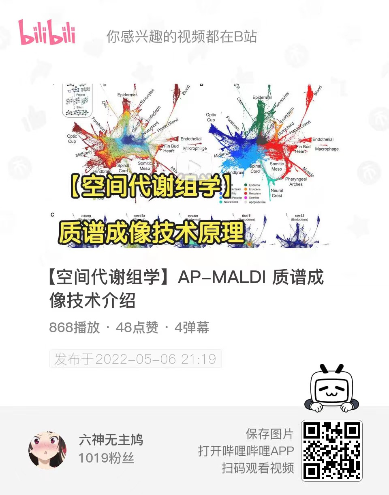
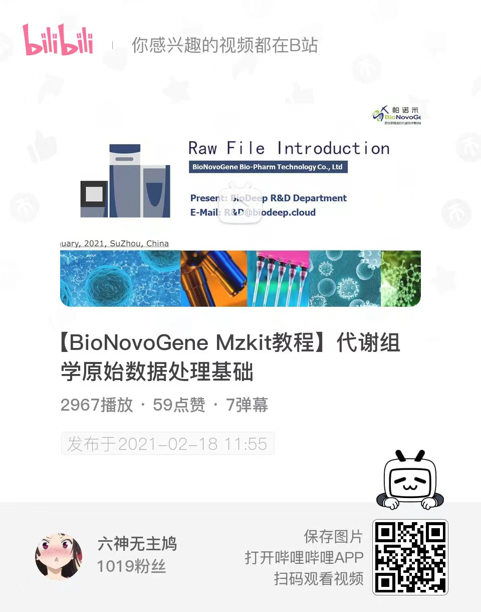

Get Started

【空间代谢组学】AP-MALDI 质谱成像技术介绍
利用质谱实现分子成像最早是由范德堡大学的Richard Caprioli等在1997年提出的。作为质谱最年轻的应用之一，质谱成像技术在医学研究、生物学研究、药物研究等诸多领域有着巨大的价值，已经成为质谱研究的一大热点。

【BioNovoGene Mzkit教程】代谢组学原始数据处理基础
本节视频主要介绍代谢组学数据分析的原始数据文件，以及基于R#脚本语言进行基本的代谢组学原始数据可视化，数据提取原理以及数据分析

【代谢组学计算原理】MetaDNA代谢物注释算法原理
中国科学院上海有机化学研究所生物与化学交叉研究中心朱正江研究员课题组于2019年发表了一个基于KEGG代谢网络的递归式外延二级谱图注释的MetaDNA方法